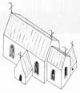
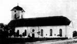
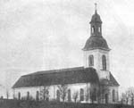
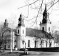
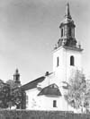

Ockelbo Kyrka
av långhus med smalare och längre kor
samt sakristia och vapenhus från
1400-talet med ett troligt läge innanför västra ingången till södra kyrkogården.
År 1741 förlängdes byggnaden västerut
vilket var ett första steg mot en större helgedom i den allt mer folkrika socken.
Under åren 1791-1793 byggdes en ny kyrka med byggmaterial från medeltidskyrkan som revs.
Ockelbo kyrka invigdes troligen den 11 november 1793 som av gammalt varit bygdens kyrkmässodag.
Tornet, som i förhållandet till kyrkan, var litet och ganska tvärt avhugget blev färdigt först år 1796.
Kyrkan rymde 1692 sittplatser.
När kyrkan var 90 år (1883) gjordes en restaurering där bland annat kyrkans torn byggdes på.
Natten till den 4 december 1904 förstördes hela kyrkan genom brand.
Det som räddades kan nämnas altar-
tavlan, ljuskronor, nummertavlor,
alabasterljusstakarna, kistan med kyrksilvret.
Alla gamla handlingar och kartor förstördes.
Den 8 december sammanträdde kyrkorådet och den 6 mars 1905 beslutades att vidtala lämplig arkitekt för att utifrån bevarade byggnadsdelar skapa ett nytt kyrkorum.
Arkitekten Gustaf Améen, Stockholm, fick uppdraget. Återuppbyggnaden pågick under åren 1906-1908 och den 23 februari 1908 invigdes den nya kyrkan av Ärkebiskopen J A Ekman.
Under år 1956 genomgick kyrkan en yttre renovering och under 1957 en omfattande inre förnyelse.
Kjell Söderström
Källor:
Ockelbo Hembygdsförenings
årsbok Pålsgården
Ärkestiftets Stiftsråds utgåva
Gästriklands kyrkor, Ockelbo Kyrka
Rekonstruktionsritning i Henrik Alms kyrkobeskrivning 1946




